1903-1909
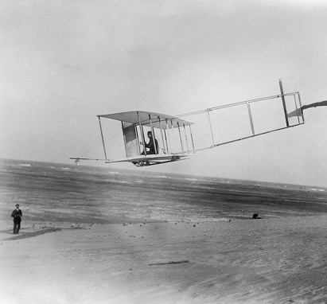
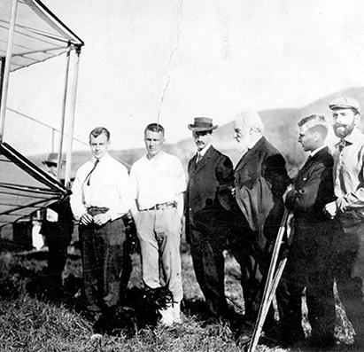
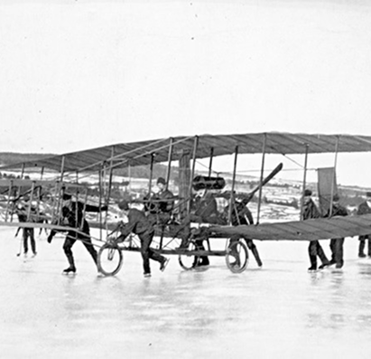
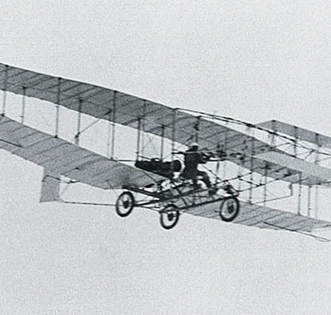
The Beginnings of Powered Flight
Successful powered flight in North America began in 1903 with the Wright Brothers. Soon after, aviation pioneers such as Glenn Curtiss joined the Aerial Experiment Association (AEA), founded by Alexander Graham Bell and J. A. D. McCurdy, to design and build experimental aircraft
In February 1909, the Silver Dart, piloted by McCurdy, flew at Baddeck, Nova Scotia, becoming the first powered, controlled flight in Canada and the British Empire. Designed by a Canadian and powered by a Curtiss engine, the Silver Dart marked a turning point in aviation history.
1912
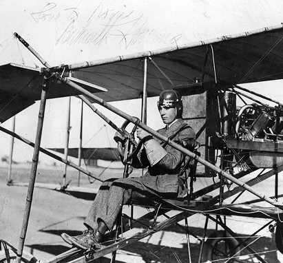
Aviation Comes to London
Many Londoners saw their first aircraft on May 25, 1912, when Beckwith Havens flew a Curtiss Model E over the city after taking off from Carling Heights, near present-day Wolseley Barracks.
Later that summer, thousands gathered at Port Stanley to watch a Wright-Burgess hydroplane, flown by Walter Brookins, perform repeated flights. These early “pusher-style” aircraft featured rear-mounted propellers that pushed the aircraft through the air.
1914-1918
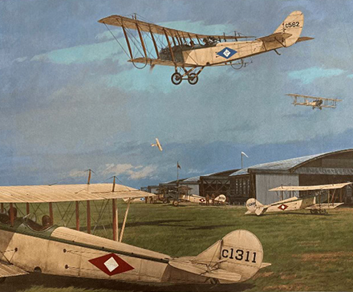
Aviation and the First World War
The First World War rapidly transformed aviation from experimental flight into a military necessity. Aircraft were adapted for reconnaissance, training, and combat, accelerating technological development.
The Curtiss JN-4 “Jenny” became the standard training aircraft used by flying schools operated in Canada by the Royal Flying Corps (RFC). An estimated 13,000 Canadians served in the RFC or the Royal Navy Air Service, many of whom trained on these aircraft.
1918
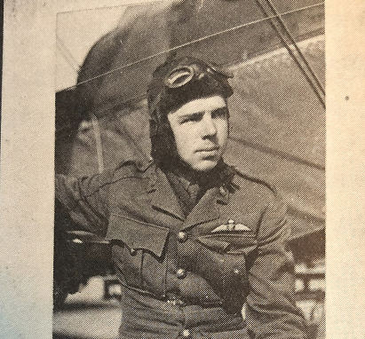
A Military Landing in London
In 1918, Captain V. P. Cronyn, a decorated Canadian flying ace with at least seven confirmed victories, flew an aircraft from Beamsville and landed at Wolseley Barracks in London. This marked one of the earliest direct connections between London and military aviation.
Cronyn and other wartime pilots believed aviation would continue to develop in Canada beyond the war, shaping both military and civilian flight in the years ahead.
1920-1924
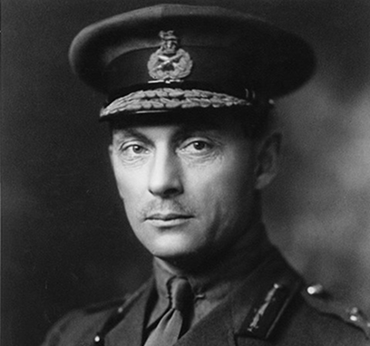
Toward a National Air Force
Following the war, a non-permanent Canadian Air Force (CAF) was created in 1920. Pilots were assigned civilian duties such as forest fire patrols, aerial mapping, and coastal surveillance to maintain flying proficiency.
In 1923, the Department of National Defence assumed control of aviation in Canada. One year later, Major-General J. H. MacBrien established a permanent air force modeled on Britain's Royal Air Force. This force became the Royal Canadian Air Force (RCAF), adopting the motto Per Ardua ad Astra—“Through Adversity to the Stars.”
1927
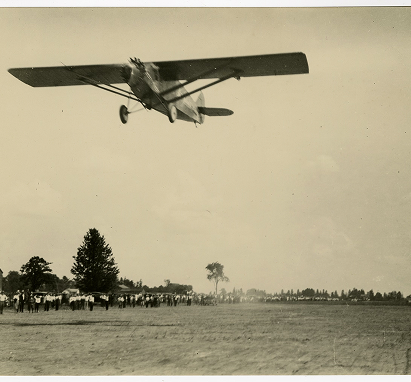
Public Fascination and the London-to-London Flight
Public enthusiasm for aviation surged after Charles Lindbergh's transatlantic flight in 1927. Inspired by this achievement, Carling Brewery offered a $25,000 prize for a flight from London, Ontario to London, England.
Veteran pilots Captain Terrence Tully and Lieutenant James Medcalf departed London on September 1, 1927, flying a Stinson Detroiter. After refuelling in Harbour Grace, Newfoundland, the aircraft disappeared over the Atlantic. The prize money was later placed in trust for their families.
1928
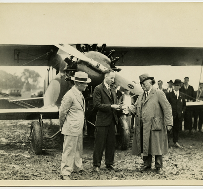
London's First Airport
Efforts to establish a permanent airport led to the formation of the London Airfield Company, chaired by Ernest Moore, after a city by-law to purchase land was defeated.
London's first airport officially opened on August 24, 1928, near Lambeth. The London Flying Club, founded by many war veterans and open to both men and women, became the airport's primary tenant, supporting training and civilian aviation.
1930s-1942
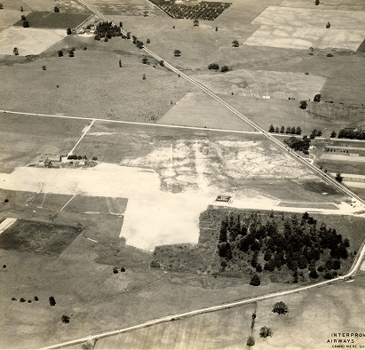
Transition and Closure
The Lambeth airfield remained in use through the 1930s, even after plans for a new airport were underway. In 1942, the site was closed when a listening station was established nearby to intercept German submarine communications in the Gulf of St. Lawrence.
After the land was sold, the London Airfield Company was dissolved in 1949, bringing this chapter of local aviation to a close.
1939-1940
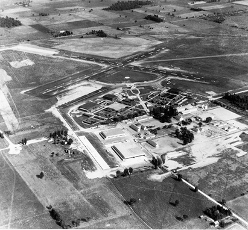
Crumlin Airport and the
Approach of War
As Canada prepared for expanded national air travel, the federal government planned a Trans-Canada airway, supported by the creation of Trans-Canada Airlines (TCA).
Construction of a new airport along Crumlin Sideroad began on September 9, 1939, one day before Canada entered the Second World War. The airport became part of the British Commonwealth Air Training Plan, with the No. 3 Elementary Flying Training School opening on June 24, 1940.
The new airport officially opened on July 27, 1940, marking the beginning of London's role in wartime aviation training and national air transportation.